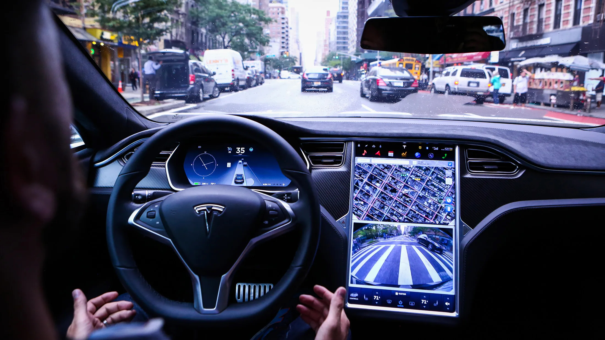

By Joseph Zou · May 2, 2025

Tesla has faced mounting scrutiny for how it promoted and released its Autopilot and Full Self-Driving (FSD) systems. While Tesla claims these features improve safety, critics argue the company overstated their capabilities, contributing to fatal accidents and public confusion. Lawsuits and federal investigations suggest Tesla misled the public by giving the impression its cars could operate fully autonomously, even though human supervision was required.
Tesla originally built its reputation on electric vehicles, later expanding into autonomous driving with Autopilot and FSD. These systems promised features like lane keeping, adaptive cruise control, and automatic lane changes. Tesla marketed them aggressively, using names and promotional videos that implied full autonomy. Elon Musk often claimed that Tesla vehicles would soon be able to drive themselves without intervention.
These claims were undermined by a growing number of crashes where Autopilot was active. A particularly troubling case was the 2023 fatal accident involving Genesis Giovanni Mendoza-Martinez, whose Tesla collided with a parked fire truck. His family’s lawsuit argued Tesla’s advertising misled him into believing Autopilot could safely drive the car independently (Kolodny, 2024). Reports also noted he maintained contact with the wheel as instructed, yet the system still failed to prevent the crash (Vigliarolo, 2024).
Beyond individual lawsuits, regulators raised concerns. In 2022, the California DMV accused Tesla of false advertising for suggesting Autopilot and FSD offered full autonomy. A judge later ruled that these accusations, if proven, could justify enforcement action. According to Reuters, the DMV argued Tesla’s cars “could not at the time of those advertisements, and cannot now, operate as autonomous vehicles” (Stempel, 2024).
Tesla frames Autopilot and FSD as advancing innovation and safety, citing data that vehicles using Autopilot experience fewer accidents per mile than those driven manually. Many drivers rely on the features to reduce fatigue and improve convenience. From Tesla’s perspective, broad deployment accelerates real-world testing, leading to faster improvements and greater safety in the long term. The company also faces pressure to innovate in a competitive industry.
Yet these potential benefits must be weighed against the risks of misleading consumers and exposing them to preventable harm in the short term. The dilemma is whether Tesla’s strategy, aimed at long-term progress, crossed an ethical line by prioritizing rollout and market leadership over accuracy and safety.
“Tesla is ethically responsible for promoting Autopilot and FSD in misleading ways because it violated autonomy and failed to uphold the principle of harm.”
The principle of autonomy requires that individuals be given accurate, transparent information to make informed decisions. Tesla’s use of names like “Autopilot” and “Full Self-Driving,” combined with Musk’s public comments, gave drivers the impression of full autonomy. While disclaimers noted that driver supervision was required, they were buried in fine print and contradicted by branding and promotional content.
Design choices reinforced this confusion. Autopilot could be activated on roads with poor lane markings without warning, and interface cues were subtle rather than persistent. These choices prevented users from exercising true informed consent. The Mendoza-Martinez case illustrates how exaggerated marketing and unclear design misled consumers about the system’s capabilities, undermining autonomy even for drivers who followed Tesla’s instructions.
The principle of harm obligates organizations to avoid foreseeable, preventable risks. Tesla promoted Autopilot and FSD as safer and more capable than they were, even as federal and state agencies documented their limitations. By releasing these systems broadly, Tesla created a foreseeable risk of misuse and accidents. Following crashes, Tesla relied on software updates rather than recalls, reinforcing a reactive rather than preventative approach.
The risks extended beyond Tesla drivers. Pedestrians, first responders, and other road users were affected by the public rollout of partially autonomous systems without stronger safeguards. In prioritizing rapid expansion, Tesla failed to adequately minimize preventable harms.
Tesla’s marketing and release of Autopilot and FSD violated autonomy by failing to provide consumers the clarity needed to make informed choices, and it violated harm by exposing users and the public to preventable dangers. While innovation in autonomous driving offers real benefits, it must be paired with transparency, accountability, and respect for safety. Moving forward, companies like Tesla must ensure that technological progress does not come at the expense of ethical responsibility.